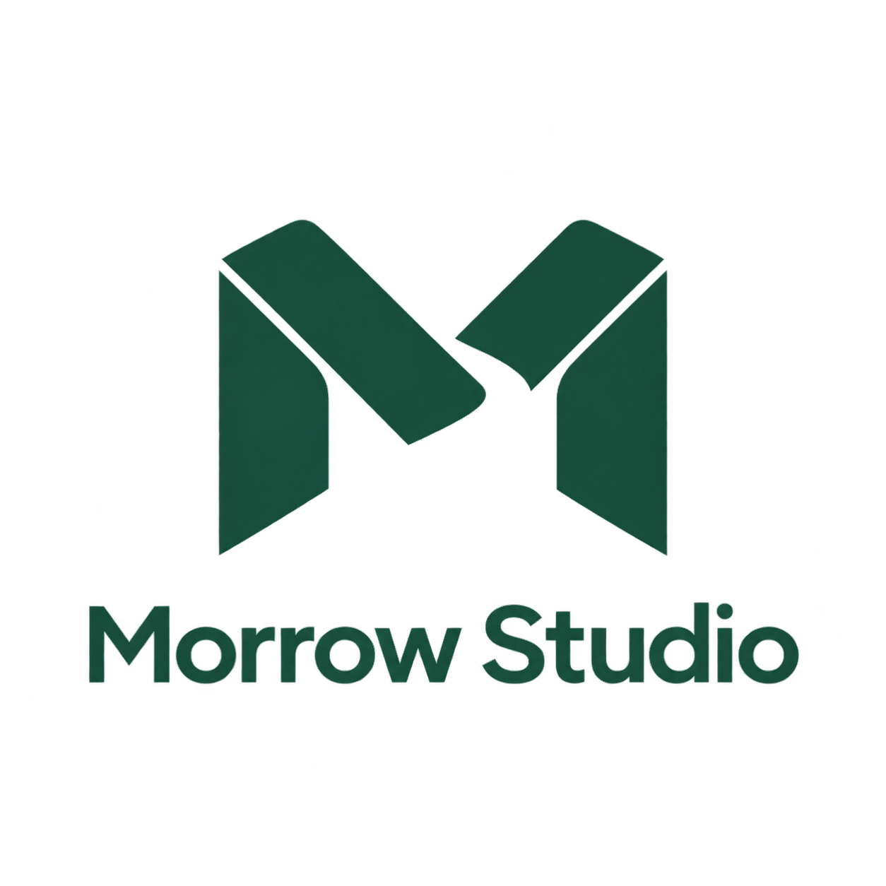
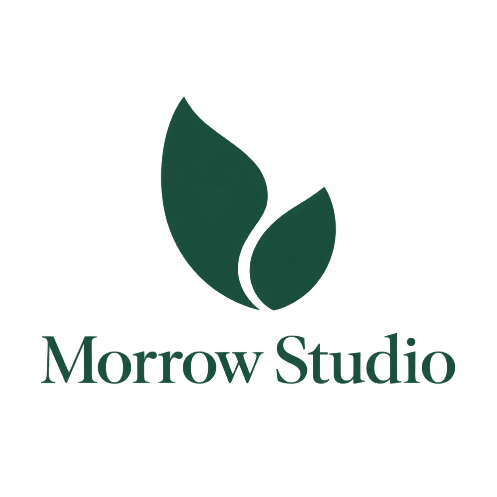
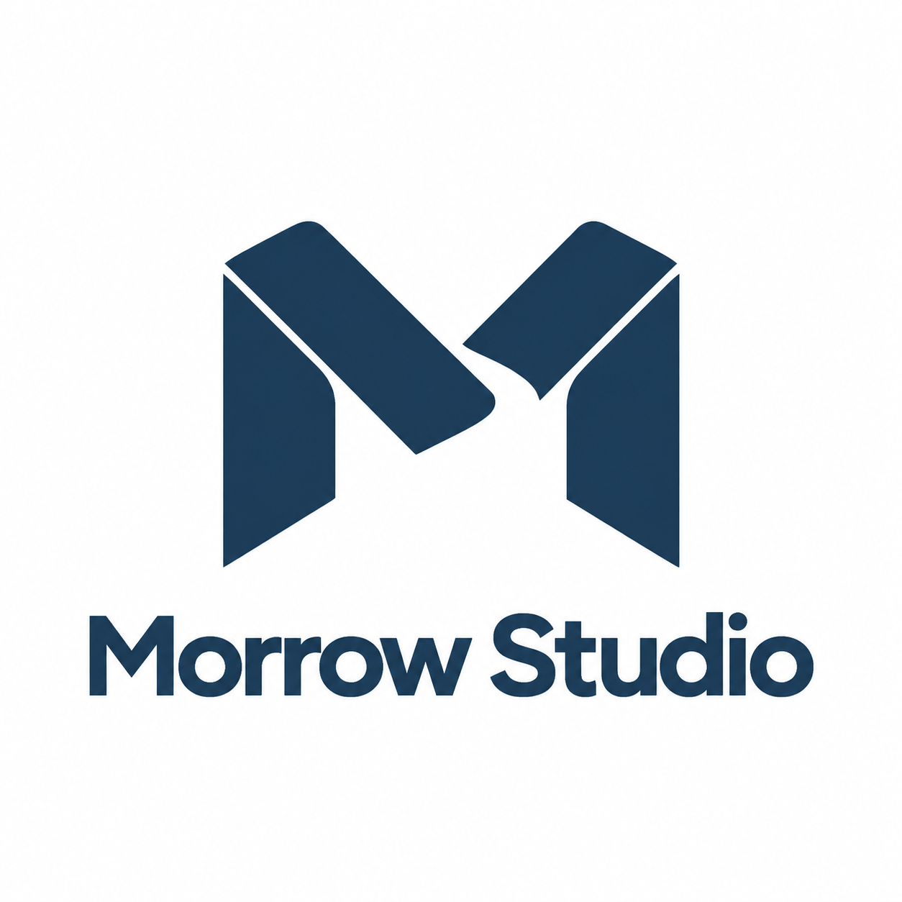

Morrow Studio · 실제 이미지 도구 검수
가상 브랜드를 이용한 플러그인 테스트입니다. 사용자 브랜드의 승인 시안이 아닙니다. 원본 PNG를 CSS 크기로만 표시하며 이미지 픽셀을 수정하지 않습니다.

A-v1 · 기하학 M / 원본
불투명 요청과 달리 투명 영역이 존재하여 전달 보류.
B-v1 · 유기적 잎 / 원본
별도 시안, 개별 파일과 프롬프트 보존.
A-v2 · A를 참조한 실제 수정
남색과 불투명 배경. 미세한 곡률과 색조 변화는 래스터 생성의 한계.
크기별 확인
조합형 전체 로고는 48px에서 글자가 읽히기 어려우므로 작은 파비콘에는 별도 심볼형이 필요합니다.
어두운 바탕에서 실제 알파 확인